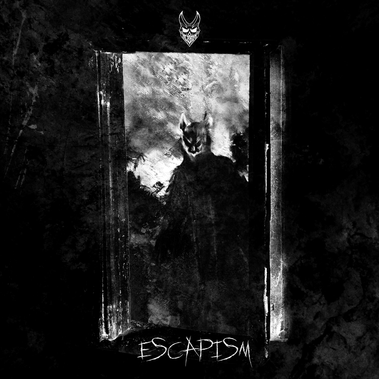

About Me
My Music
Hello! My name is Jens but I use the moniker "IceBox" for my identity in music.
I have been a music producer and vocalist since 2019. Additionally, I have been playing guitar since age 13.
Over the years, I have played the roles of either lead or rhythm guitar for multiple small bands, though I didn't release any music until embarking upon my solo career.
My music is probably aggressive and violent to others; however, it holds significant therapeutic value to me.
Music guided me through a very troubling adolescence and has acted as a conduit for my negativity since that time.
While I understand my music may not be for everyone, I hope it reaches those who endured strife as well.
Have a great day, thanks for stopping by and reading!
Below I have listed my released albums in the order of release and with their corresponding cover photos.
Purgatory

This is the album "Purgatory"
Escapism

This is the album "Escapism"
I'll Have The Tea, Hold The Thallium

This is the single "I'll Have The Tea, Hold The Thallium"
Check Out My Show and Tell

This is the single "Check Out My Show and Tell"